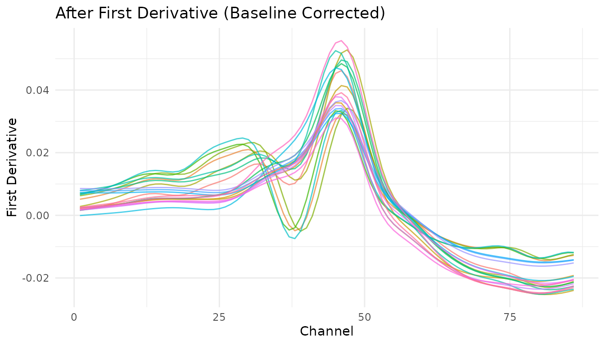
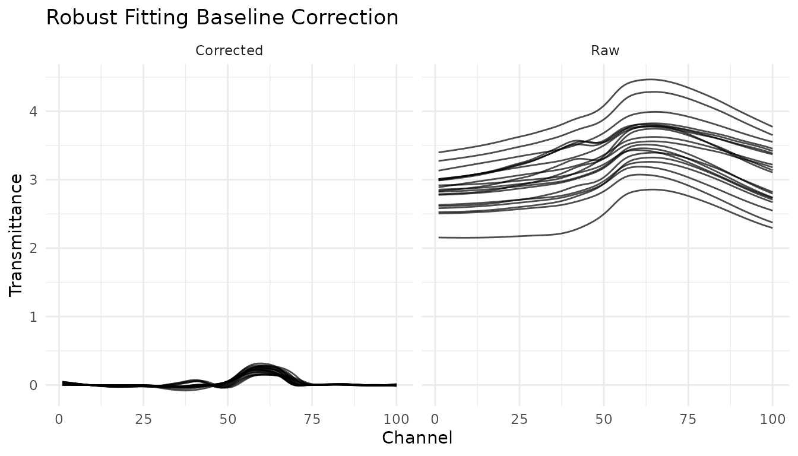
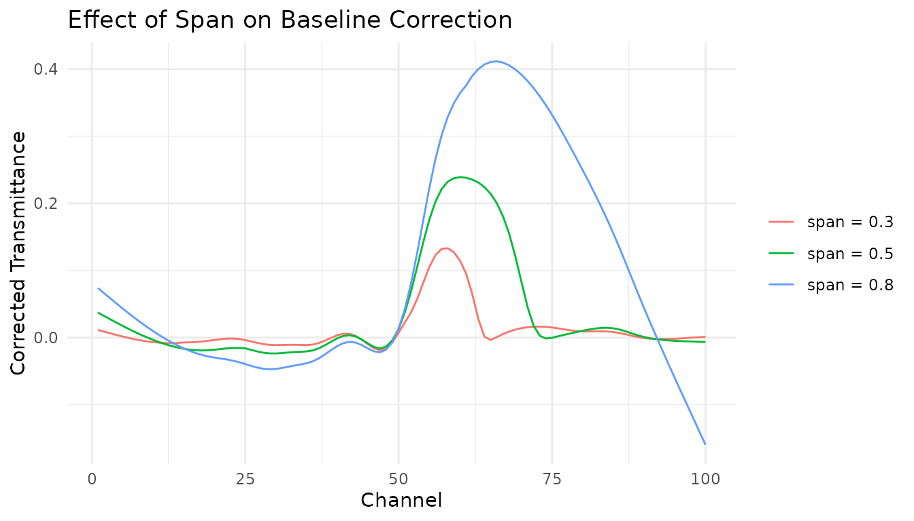

Introduction
Baseline correction is a common preprocessing step for spectroscopic data. Spectral baselines can drift due to instrument effects, sample scattering, or fluorescence, obscuring the chemical information in your spectra.
This vignette demonstrates baseline correction techniques available in measure.
The problem: Baseline drift
Let’s visualize baseline issues in NIR spectra using the meats dataset:
data(meats)
# Convert to long format for visualization
meats_viz <- meats |>
mutate(id = row_number()) |>
pivot_longer(
cols = starts_with("x_"),
names_to = "channel",
values_to = "transmittance"
) |>
mutate(channel = as.integer(gsub("x_", "", channel)))
# Plot raw spectra
meats_viz |>
filter(id <= 20) |>
ggplot(aes(x = channel, y = transmittance, group = id, color = factor(id))) +
geom_line(alpha = 0.7) +
labs(
x = "Channel",
y = "Transmittance",
title = "Raw NIR Spectra with Baseline Variation"
) +
theme_minimal() +
theme(legend.position = "none")
Notice the vertical offset between spectra? This baseline shift isn’t related to the chemical composition we want to model.
Baseline correction methods
Using Savitzky-Golay derivatives
The most common approach for baseline correction in measure is to use
derivatives via step_measure_savitzky_golay(). First
derivatives remove constant baseline offsets, while second derivatives
remove linear baseline trends.
library(recipes)
# First derivative removes constant baseline
rec_d1 <- recipe(water ~ ., data = meats) |>
step_measure_input_wide(starts_with("x_")) |>
step_measure_savitzky_golay(window_side = 7, differentiation_order = 1)
processed <- bake(prep(rec_d1), new_data = NULL)
# Visualize corrected spectra
plot_data <- processed |>
slice(1:20) |>
mutate(id = row_number()) |>
unnest(.measures)
ggplot(plot_data, aes(x = location, y = value, group = id, color = factor(id))) +
geom_line(alpha = 0.7) +
labs(
x = "Channel",
y = "First Derivative",
title = "After First Derivative (Baseline Corrected)"
) +
theme_minimal() +
theme(legend.position = "none")
Using the robust fitting baseline function
For cases where derivatives aren’t appropriate, measure provides
subtract_rf_baseline(), which fits a robust local
regression to estimate and subtract the baseline:
# Use the meats_long dataset included in measure
data(meats_long)
# Apply robust baseline correction
corrected <- meats_long |>
filter(id <= 20) |>
group_by(id) |>
subtract_rf_baseline(yvar = transmittance, span = 0.5)
# Compare before and after
comparison <- meats_long |>
filter(id <= 20) |>
mutate(type = "Raw") |>
bind_rows(corrected |> mutate(type = "Corrected"))
ggplot(comparison, aes(x = channel, y = transmittance, group = interaction(id, type))) +
geom_line(alpha = 0.7) +
facet_wrap(~type) +
labs(
x = "Channel",
y = "Transmittance",
title = "Robust Fitting Baseline Correction"
) +
theme_minimal()
Adjusting the span parameter
The span parameter controls how much of the data is used
for local regression. Larger values produce smoother baselines:
spans <- c(0.3, 0.5, 0.8)
span_comparison <- lapply(spans, function(s) {
meats_long |>
filter(id == 1) |>
group_by(id) |>
subtract_rf_baseline(yvar = transmittance, span = s) |>
mutate(span = paste("span =", s))
}) |>
bind_rows()
ggplot(span_comparison, aes(x = channel, y = transmittance, color = span)) +
geom_line() +
labs(
x = "Channel",
y = "Corrected Transmittance",
title = "Effect of Span on Baseline Correction",
color = NULL
) +
theme_minimal()
Choosing a method
| Method | Best for | Notes |
|---|---|---|
| First derivative | Most NIR/IR applications | Also removes scatter effects |
| Second derivative | Linear baseline drifts | More aggressive, may amplify noise |
| Robust fitting | Preserving peak shapes | Use before derivatives if needed |
Combining with other preprocessing
Baseline correction often works best as part of a complete preprocessing pipeline:
# Complete preprocessing recipe
rec_complete <- recipe(water + fat + protein ~ ., data = meats) |>
step_measure_input_wide(starts_with("x_")) |>
# First derivative for baseline correction
step_measure_savitzky_golay(window_side = 5, differentiation_order = 1) |>
# SNV for scatter correction
step_measure_snv() |>
# Output for modeling
step_measure_output_wide(prefix = "nir_")
final_data <- bake(prep(rec_complete), new_data = NULL)
#> Warning: Values from `value` are not uniquely identified; output will contain list-cols.
#> • Use `values_fn = list` to suppress this warning.
#> • Use `values_fn = {summary_fun}` to summarise duplicates.
#> • Use the following dplyr code to identify duplicates.
#> {data} |>
#> dplyr::summarise(n = dplyr::n(), .by = c(water, fat, protein, location)) |>
#> dplyr::filter(n > 1L)
final_data[1:5, 1:8]
#> # A tibble: 5 × 8
#> water fat protein nir_01 nir_02 nir_03 nir_04 nir_05
#> <dbl> <dbl> <dbl> <list> <list> <list> <list> <list>
#> 1 60.5 22.5 16.7 <dbl [1]> <dbl [1]> <dbl [1]> <dbl [1]> <dbl [1]>
#> 2 46 40.1 13.5 <dbl [1]> <dbl [1]> <dbl [1]> <dbl [1]> <dbl [1]>
#> 3 71 8.4 20.5 <dbl [1]> <dbl [1]> <dbl [1]> <dbl [1]> <dbl [1]>
#> 4 72.8 5.9 20.7 <dbl [2]> <dbl [2]> <dbl [2]> <dbl [2]> <dbl [2]>
#> 5 58.3 25.5 15.5 <dbl [2]> <dbl [2]> <dbl [2]> <dbl [2]> <dbl [2]>Summary
- Use
step_measure_savitzky_golay()with derivatives for most baseline correction needs - The first derivative (
differentiation_order = 1) handles constant baseline offsets - The second derivative (
differentiation_order = 2) handles linear baseline trends - For specialized cases, use
subtract_rf_baseline()before the measure workflow - Combine baseline correction with normalization (SNV/MSC) for best results